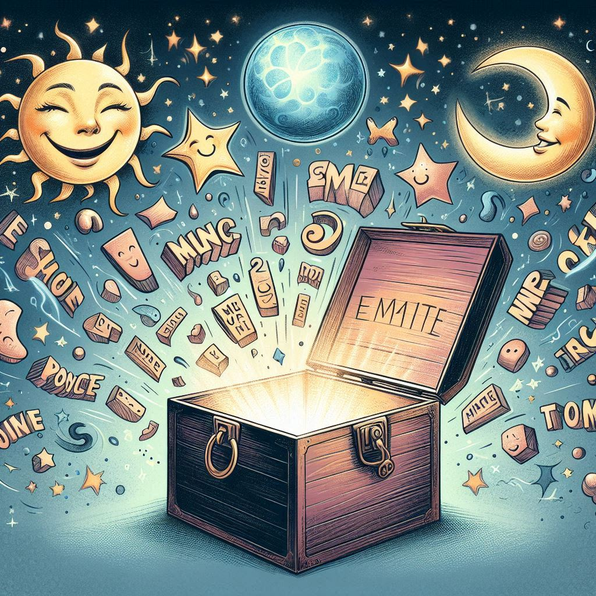

Children's Poetry by Ricardo Abril

In poetry, which is everything and is found everywhere if we choose to see it,
words belong to no
one in particular. Just like the stars, they are always there for us to gaze at, smell, feel, think,
speak, as long as there are no clouds in our hearts. And if there are clouds, let us not forget
that the words are still there, always, offering us their music, yearning to be caught and spoken
with love.
How many words do we need to discover or perhaps create to build a bridge that
truly unites the
world in a single struggle for a better life for all?
It is not the fault of words when we use them as knives to hurt others. Nor when
we swallow them
instead of telling someone that we love them: the father, the mother, the sweetheart, the
friend, the dog, the sun, the river, the tree or its shade, the rain... It is not the fault of words
when we do not listen to them if they come from others, yet wish to impose them if they are ours.
Nor
when we betray their innocence (they lend themselves to anything) and imbue them with hatred, or
cynicism, or hypocrisy. We could just as easily do the exact opposite.
We are earth made flesh. Earthly heart, earthly throat. Throat: earthen flute
through which air,
an enchanting sprite, sings if we allow it. Or kills and kills us if we force it. With words, the
choice to build or destroy is solely ours. Always. I invite you to be architects of the word,
constructing with it spaces of light and love where all human beings can meet and smile
gratefully, acknowledging that we are privileged, that life is a miracle, and poetry its finest
portrait.
The heart of each word is a music box. If we open that heart and listen to its
song, we will
immerse ourselves in a world of music and wisdom, for each word will call to its sisters and, little
by
little, they will gather to form marvelous choirs that reveal simple and beautiful things within
us and around us.
Here are my verses, child, sister, brother, friend; they are my discoveries, they
have taught me
many things, they have sown joy in me. They are yours and everyone's. Take them and play with them
if
you like. And whenever you wish, seek poetry yourself in the sacred chest of your own heart. You
will find countless treasures...
Early Bird
Bird,
teach me to rise early,
greeting the day
with a song so purely,
also teach me
how to live,
simply,
with no need to boast or give,
loving the wind,
the rain, the sun,
flying free until life's done!
Sleepy Moon
The moon has fallen asleep
Covered with a quilt so grand
That the wind has gently stitched
With lovely clouds so white and grand...
The stars, so tender and dear,
Stand as faithful guards nearby,
While she dreams of things so fair
In her cozy bed so high...
What will the moon dream tonight?
Who could guess her dreams so bright?
Oh, if by some lucky chance
She would come and share her sight!
The Little Star and The River
- Little star, why do you gaze
- At the river night and day?
- I love to see myself there,
- In its mirror, crystal clear…
- Are you perhaps in love?
- Yes, with the tenderness of its glance above...
- But little star, you're made of fire,
- And he, of water, is his attire!
- I love him for his cool embrace,
- That soothes the warmth of my fiery face!

Little Empty Seashell
Little empty seashell,
ear of the sea:
how many secrets
have been given to thee?

Centipede
People say it has 100 feet
and moves them all in rhythmic beat,
I've never counted,
but I've been told,
not more nor less,
each one a marvel to behold,
and that it lives deeply in debt,
with shoe bills it can't forget.
How far with all those feet
has the centipede traveled?
And moving them all at once,
how tired it must be, unraveled!
The Word
I am the word
word,
whoever wants
to understand me
let them open me...
A magic box I am:
I contain all things
and in all of them I am:
With the moon
I am moon
and I am sun
with the sun,
I am smile
in your smile
and in your name
happily I run...
